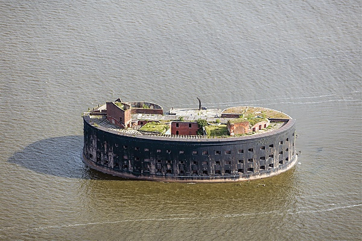
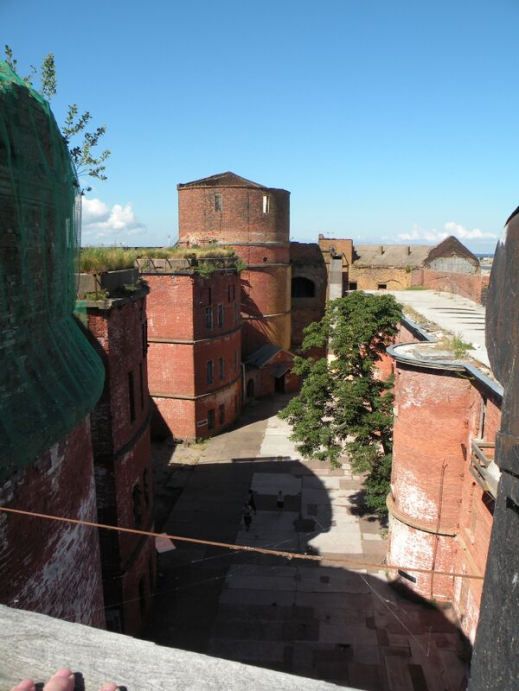

Форт Александр I - вид с воды. Источник: открытые источники
📋 Основная информация
| Название | Форт «Александр I» (Вторая Южная батарея, «Чумной») |
|---|---|
| Дата основания | 1838-1845 гг. (каменный форт) |
| Архитекторы и инженеры | Инженер-полковник А.Д. Готман, инженер-майор И.П. Бурнашев, военный инженер Э.И. Тотлебен (перестройка 1859-1867 гг.) |
| Статус | Объект культурного наследия федерального значения |
📜 История создания
Строительство (1838-1845): Форт был построен на искусственном острове в Финском заливе как часть системы обороны Кронштадта. Проект разработан инженером А.Д. Готманом.
Конструкция: Овальное здание размером 90×60 метров с тремя этажами и внутренним двором. Общая площадь более 5000 м². Гарнизон до 1000 человек.
Модернизация (1859-1867): Под руководством Э.И. Тотлебена форт был усилен новыми орудиями и улучшена система обороны.
Чумная лаборатория (1899-1917): С 1899 года форт был передан Институту экспериментальной медицины для исследований чумы и других инфекционных заболеваний. Здесь работали выдающиеся учёные И.П. Павлов, Д.К. Заболотный, В.Х. Хавкин.
Советский период: С 1923 года — склад минно-трального оборудования. К 1983 году заброшен. Во время съёмок фильма «Порох» (1985) произошёл пожар.
Источники: РГВИА, ф. 1, оп. 1, д. 1457; Раздолгин А.А. «Кронштадтская крепость», 2003.
⚔️ Вооружение по периодам
| Период | Тип орудий | Количество | Калибр |
|---|---|---|---|
| 1845-1859 | Пушки бомбические | 103 | 3-5 пудов |
| 1867-1914 | Нарезные орудия системы Армстронга | 54 | 8-11 дюймов |
| 1914-1917 | Береговые пушки Канэ | 32 | 152-203 мм |
| 1941-1945 | Зенитные орудия | до 16 | 76-85 мм |
Источники: РГАВМФ, ф. 417, оп. 1, д. 235; Широкорад А.Б. «История крымских войн», 2004.
🎖️ Роль в войнах
Крымская война (1853-1856): Форт входил в систему обороны Кронштадта. В 1854-1855 годах англо-французская эскадра не решилась атаковать укрепление.
Первая мировая война (1914-1918): Форт прикрывал подступы к Петрограду с моря. После 1917 года вооружение частично демонтировано.
Великая Отечественная война (1941-1945): На форте размещались зенитные батареи, защищавшие Кронштадт от воздушных налётов.
Источники: РГВИА, ф. 1, оп. 1, д. 6790; Боевой путь Краснознамённого Балтийского флота, 1990.
🏛️ Современное состояние и статус охраны
Статус: Объект культурного наследия федерального значения (Постановление Правительства РФ № 527 от 10.07.2001).
Состояние: Удовлетворительное. Требуется реставрация. Доступ ограничен.
Использование: В настоящее время не используется. Планируется создание музея истории медицины и форта.
Доступность: Доступ только по специальным разрешениям. Возможны организованные экскурсии по воде.
Источники: Комитет по культуре Ленинградской области; Министерство культуры РФ.
📚 Источники информации
- РГВИА (Российский государственный военно-исторический архив), ф. 1, оп. 1, д. 1457, д. 6790
- РГАВМФ (Российский государственный архив военно-морского флота), ф. 417, оп. 1, д. 235
- Раздолгин А.А. «Кронштадтская крепость: история и современность». — СПб.: Лениздат, 2003.
- Широкорад А.Б. «История крымских войн». — М.: Вече, 2004.
- «Боевой путь Краснознамённого Балтийского флота». — М.: Воениздат, 1990.
- Материалы Института экспериментальной медицины РАМН
- Комитет по культуре Ленинградской области
📸 Фотогалерея форта Александр I
